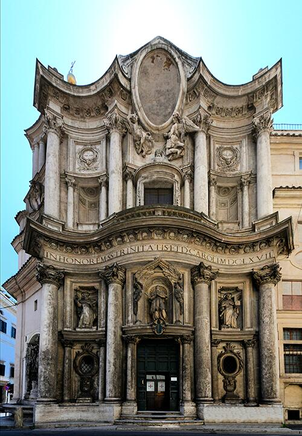
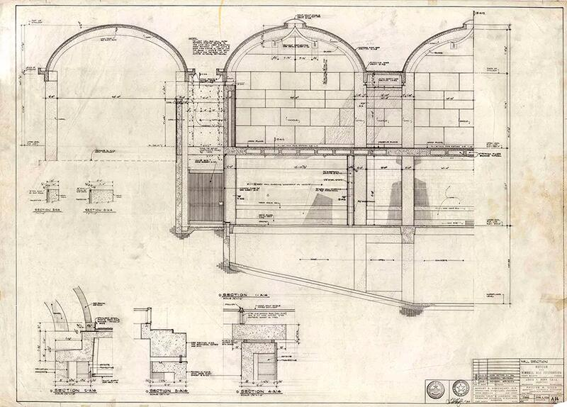
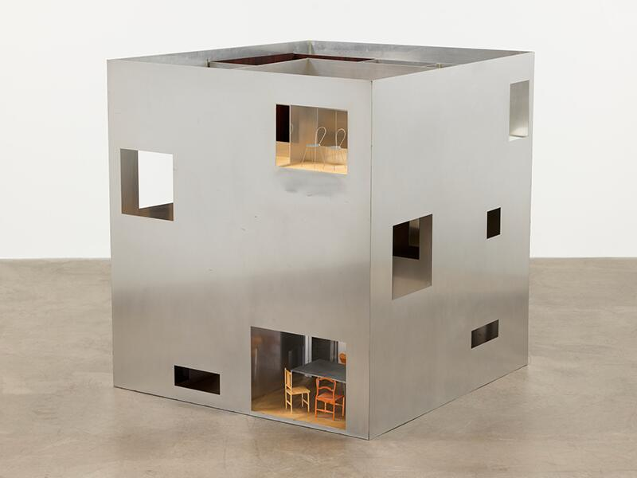
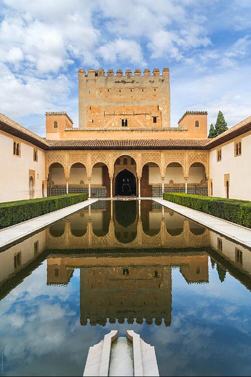
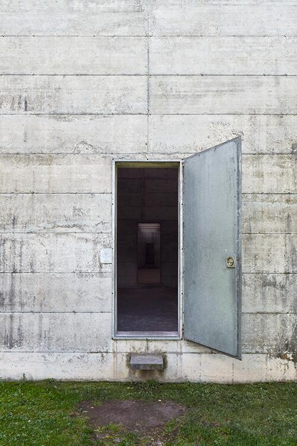
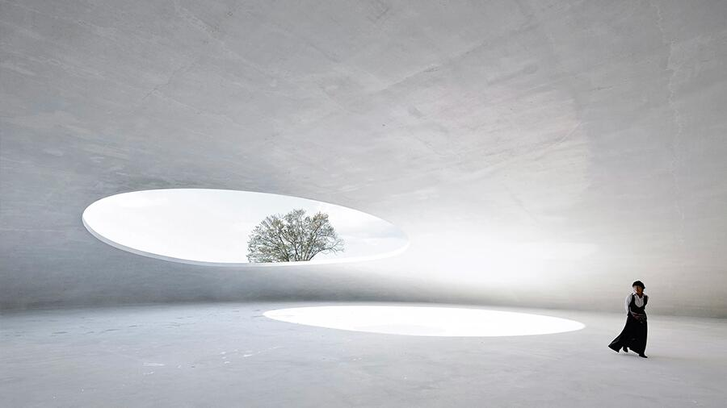
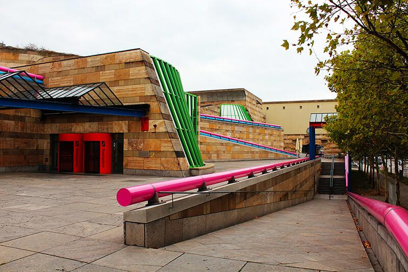
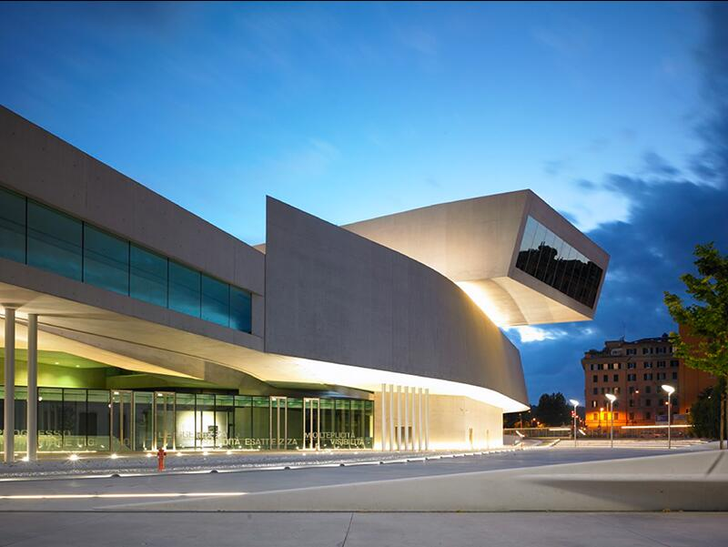
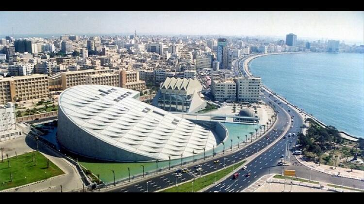

Il progetto come risposta al corpo in movimento
Ogni forma architettonica è pensata per un corpo in movimento. Spazio e materia non si limitano a essere percepiti: sono attraversati, vissuti, messi in relazione tra loro da chi li abita. Progettare significa orchestrare rapporti tra luce, ritmo, pieni e vuoti che si attivano lungo un percorso. Il progetto nasce da questa dinamica percettiva, dove l’esperienza precede la figura.

Il modello come verifica tipologica e comportamentale
La biblioteca di Labrouste è una macchina percettiva calibrata sul movimento di chi studia. L’accesso, quasi urbano, introduce a un atrio di soglia: un luogo denso, scandito dalla lista incisa degli autori in facciata e dall’inerzia pietrosa della muratura. È una compressione intenzionale che prepara l’apertura successiva. La grande sala di lettura si dispiega come un paesaggio sospeso: doppia navata, altezza misurata, volte sottili in ferro e ghisa che sostengono senza gravare, una pelle luminosa che diffonde la luce naturale in modo uniforme. Il passaggio dal pieno massivo all’ossatura metallica è un cambio di stato percettivo: il corpo avverte la perdita di peso, la vista riconosce un sistema di relazioni regolari, l’udito si assesta su un silenzio poroso.
La struttura non è esibizione tecnologica ma grammatica di comportamento: le campate organizzano orientamenti e soste, i tavoli allineano traiettorie, le finestre dànno ritmo al respiro della sala. Il ferro produce un effetto di “geometria leggera” che rende la profondità leggibile senza ostacoli. Tutto è pensato per la continuità del gesto di studio: sedere, sollevare lo sguardo, ritrovare un ordine stabile. In questo senso, natura e geometria non sono opposte: la regola modulare si mette al servizio di una fisiologia del tempo lungo, della concentrazione, dell’abitare quieto.
La biblioteca non si limita a contenere libri: costruisce la condizione per leggerli. È architettura che guida senza imporre, che trasforma il cammino in metodo. La forma appare come esito di una precisa etica della misura, dove la leggerezza è un fatto morale prima che estetico.

Il modello come test di materia, luce e comportamento
A Klippan, Lewerentz compone un percorso che restituisce al rito la sua misura terrestre. Il fedele non “entra” semplicemente: viene condotto da un sistema di muri che piegano, filtrano, rallentano. La quota dell’ingresso, la soglia profonda, i varchi laterali costruiscono un avvicinamento privo di scenografia ma ricco di intensità tattile. Il mattone scuro, leggermente irregolare, assorbe la luce e la restituisce come chiarore obliquo; l’aria sembra più densa, i passi più lenti. Il movimento diventa gesto meditativo.
All’interno, l’orientamento non è imposto da un asse gerarchico, ma da un campo: pedane, gradini minimi, lampade basse, sedute decentrate. La luce non proviene da un unico punto: filtra da fenditure, si posa sugli spigoli, lascia in penombra porzioni significative. È una coreografia lenta, dove geometria e materia trattengono la figura per lasciar emergere la presenza. La direzione verso l’altare si forma per attrazione, non per comando; la comunità si raccoglie in una centralità porosa, attraversata da silenzi, da respiri.
Lewerentz non cerca la monumentalità; lavora su una densità che avvicina il sacro alla vita. Ogni dettaglio – il ferro ossidato, le superfici senza finitura, le lampade come punti di gravità – partecipa alla stessa etica: nessuna retorica, solo misura. Ne risulta un’architettura che non rappresenta il rito: lo rende possibile. La forma è il comportamento stesso dello spazio, una disciplina del corpo che lo orienta verso l’ascolto. Qui natura e geometria convergono nella costruzione di una interiorità condivisa: la luce bassa, la massa, la direzione minima diventano strumenti per far accadere il tempo del raccoglimento.

Your Rainbow Panorama è un dispositivo ambientale che fa del camminare un atto di conoscenza. L’anello vetrato, continuo e sopraelevato, ingloba la città in una sequenza cromatica che muta passo dopo passo. Non c’è un punto di vista corretto: l’orizzonte è sempre lo stesso e, insieme, sempre diverso. Il colore agisce come geometria sensibile: orienta l’attenzione, altera la distanza percepita, sposta il ritmo del respiro. Il corpo registra micro-variazioni di luce e saturazione, la memoria ricalibra il paesaggio.
Qui la forma è puro comportamento: una curva perfetta che si limita a offrire condizioni, lasciando che l’esperienza le abiti. La trasparenza colorata non aggiunge un’immagine alla città; la ri-compone in spettri successivi, rivelando ciò che lo sguardo abituale non distingue. Natura e geometria si toccano in un equilibrio inedito: la regola dell’anello – misura, continuità, isotropia – si mette al servizio dell’instabilità atmosferica, del mutare del cielo, della luce che scorre. Ne nasce una pedagogia della percezione, dove l’arte non è oggetto ma strumento per capire come vediamo.
Il percorso è circolare ma non ripetitivo: ogni giro è un’altra esperienza, perché cambiano ora, tempo meteorologico, posizione del corpo. Non c’è retorica tecnologica: c’è una lucidissima economia di mezzi al servizio di una complessità fenomenologica. L’opera mostra come un semplice protocollo spaziale possa trasformare la città in laboratorio sensoriale, restituendo all’atto di guardare una qualità attiva e consapevole. Camminare diventa il progetto stesso: la forma non illustra, produce esperienza.
La sequenza:
lo spazio come esperienza temporale
Lo spazio architettonico si svela nel tempo. Non è un’immagine istantanea, ma un montaggio di passaggi, pause, deviazioni, soglie. La sequenza costruisce una narrazione spaziale che guida il corpo e la percezione. Più che comporre volumi, progettare significa costruire una partitura temporale, fatta di ritmo, cadenze e tensioni.

A San Carlo alle Quattro Fontane la sequenza non è una semplice somma di ambienti, ma un dispositivo di trasformazioni progressive. L’angolo dell’incrocio, irrequieto e rumoroso, stringe il passante; la facciata concava lo attira e lo trattiene, come un’inspirazione. La soglia introduce a un interno in cui pareti ondulate, colonne e nicchie non definiscono un perimetro stabile, ma un flusso: il campo viene modulato da un’oscillazione continua che fa percepire la pianta ovale come un corpo vivo. La geometria, rigorosissima, lavora per variazioni: ellissi, croci, cerchi si sovrappongono generando molteplici centri di attenzione.
Il tempo dell’attraversamento è scandito da una serie di micro-eventi: la luce che scivola sui rilievi, l’alternanza di pieni e cassettonati, la progressione delle altezze. L’energia della navata si concentra verso la cupola; la lanterna, luminosa e leggera, è il culmine di una scalata percettiva: dopo la spinta dal basso, l’apertura sospesa restituisce aria e misura. Borromini orchestra pause e accelerazioni come un compositore: ogni curva rallenta, ogni innesto spinge in avanti.
La sequenza afferma una logica più ampia: lo spazio è un processo che guida il corpo e, insieme, lo riorienta. La vicinanza tra massa muraria e leggerezza della volta produce una dinamica intensa tra peso e sospensione. Non esiste un punto privilegiato; esiste un cammino che costruisce lo sguardo. In questo modo la chiesa diventa un’esperienza temporale esatta: un racconto in cui l’ordine geometrico è messo al servizio dell’emozione misurata dell’attraversamento.

Il Kimbell Art Museum è uno dei più chiari esempi della modernità in cui l’architettura si manifesta come sequenza, non come forma statica. In Kahn lo spazio non si rivela immediatamente: procede per tappe, soglie, variazioni di luce, creando un’esperienza temporale in cui la conoscenza dell’edificio avviene camminando.
L’ingresso introduce subito il tema della compressione: un portico basso, una soglia raccolta, una penombra che costringe lo sguardo verso il punto luminoso successivo. Superato l’accesso, la sequenza si apre nella grande volta, dove la luce zenitale — filtrata attraverso i famosi schermi riflettenti in alluminio — trasforma il soffitto in un campo luminoso, dinamico e mutevole. Ogni volta non è solo un modulo strutturale, ma una “camera di luce” che definisce un episodio dello spazio, un ritmo percettivo.
Il percorso non è lineare: il visitatore è guidato da espansioni e contrazioni, da aperture diagonali, da scorci laterali che introducono pause e deviazioni. La sequenza, infatti, non è un semplice corridoio, ma una struttura narrativa: il museo si rivela per differenze, alternando ambienti introspettivi e spazi che si aprono verso il giardino.
Ne emerge un’architettura che non si lascia comprendere in un’unica immagine. Come avviene nel montaggio cinematografico, il senso si costruisce nel tempo: nella continuità tra luce e materia, nella successione delle volte, nelle soglie che modulano l’intensità percettiva.
Per questo il Kimbell Art Museum è un caso esemplare della presente scheda: dimostra che progettare sequenze significa progettare esperienze, non piante; tempi, non forme isolate.

La House in a Plum Grove di Kazuyo Sejima rappresenta una delle interpretazioni più radicali e raffinate del tema della sequenza spaziale nella contemporaneità. Qui la sequenza non nasce da grandi gesti compositivi, ma da una serie di micro-eventi: variazioni di trasparenza, spessori minimi, soglie impercettibili, cambi di densità tra un ambiente e l’altro. Lo spazio diventa un fluire continuo, costruito più attraverso atmosfere che attraverso volumi.
La casa è definita da pareti sottilissime — in vetro, in policarbonato, in pannelli leggeri — che modulano costantemente la percezione. Camminare nell’abitazione significa attraversare un campo di trasparenze che si addensano o si rarefanno, facendo sì che l’interno e il giardino si confondano. Le stanze non sono unità discrete, ma episodi di una sequenza: piccole differenze di luce, leggere variazioni di quota, spostamenti di pannelli che costruiscono un percorso non lineare e sempre mutevole.
L’architettura di Sejima mostra che la sequenza può essere minima, quasi impercettibile, e tuttavia potentissima. Non c’è monumentalità, non c’è teatralità barocca: c’è una sensibilità rarefatta in cui lo spazio si conosce attraverso un continuo aggiustamento dello sguardo. L’esperienza temporale non deriva dalla profondità o dalla massa, ma dalla delicatezza con cui il corpo percepisce piccoli cambiamenti.
Per questo la House in a Plum Grove è un caso di estremo interesse in questo contesto: dimostra che lo spazio non è fissato, ma si scopre camminando — e che anche poche pareti leggere possono costruire un’architettura intensamente sequenziale.
La soglia:
il punto in cui lo spazio cambia
La soglia non è un limite, ma una trasformazione. È il luogo in cui mutano luce, acustica, materia, temperatura, orientamento. Ogni attraversamento modifica la percezione e apre a una nuova qualità dello spazio. La soglia agisce come dispositivo critico: introduce differenze, produce intensità, condensa il senso del progetto.

La Corte dei Mirti dell’Alhambra offre uno degli esempi più raffinati di soglia come trasformazione percettiva. L’architettura islamica nasrida evita l’opposizione netto-interno/esterno tipica dell’Occidente e costruisce, invece, una sequenza continua di transizioni. Qui, la soglia è il portico che media tra gli ambienti ombrosi e densi degli interni e la luminosità abbagliante del cortile centrale. Attraversarlo significa sperimentare uno slittamento atmosferico: la luce si diffonde attraverso i trafori, i ritmi delle colonne scandiscono il passo, l’acqua della vasca riflette e moltiplica ciò che l’occhio percepisce.
La soglia diventa un filtro: attenua la luce, corregge lo sguardo, produce profondità. La percezione non cambia per contrasto ma per modulazione. L’architettura non separa, ma calibra le intensità del paesaggio interno della corte.
Per la lezione 6, questo caso è fondamentale perché mostra la soglia come strumento progettuale: un luogo in cui l’architettura non definisce semplicemente un limite, ma costruisce un’esperienza. È la soglia a fondare l’identità atmosferica dell’Alhambra: un equilibrio delicato tra ombra e riflesso, tra geometria e vibrazione luminosa, tra misura architettonica e vita sensoriale dello spazio.

A La Congiunta la soglia non è un varco funzionale, ma un vero evento percettivo: un punto in cui il corpo comprende immediatamente che lo spazio sta cambiando natura. Märkli costruisce questa transizione con una radicale economia di mezzi. Una fenditura nel volume, un ingresso laterale quasi anonimo, un breve tratto compresso che costringe a rallentare: è qui che il visitatore attraversa un confine immateriale tra il paesaggio luminoso della valle e l’interno oscuro, denso, monolitico del museo.
La soglia funziona come uno strumento di disorientamento controllato: lo sguardo non vede ancora lo spazio principale, ma ne percepisce già la qualità atmosferica. Un tenue riflesso sul calcestruzzo, un suono ovattato, la brusca caduta di luce segnano la perdita della continuità con l’esterno. Non si entra semplicemente in un edificio: si entra in un’altra condizione percettiva.
Märkli dimostra che la soglia può essere un dispositivo critico estremamente potente: trasforma la temperatura dello spazio, modifica l’orientamento corporeo, predispone l’attenzione. Nell’interno di La Congiunta — una sequenza di sale grezze e silenziose — questo breve passaggio iniziale acquista un valore quasi rituale: è l’atto che prepara il visitatore all’incontro con le sculture di Josephsohn, permettendo allo spazio di assumere il proprio carattere contemplativo.
Qui la soglia non dichiara una separazione, ma genera una nuova atmosfera. È il punto in cui l’architettura diventa percezione.
La soglia è l’evento che definisce l’intero edificio.

Il Teshima Art Museum è una lezione radicale sulla soglia come trasformazione. Non c’è facciata né porta in senso tradizionale: l’accesso è un passaggio graduale dal pendio coltivato alla superficie liscia del pavimento, dal rumore del vento all’ovattamento interno. Entrare significa attraversare una differenza di luce, acustica, temperatura. Il gesto di togliersi le scarpe è già un dispositivo percettivo: rende consapevoli della materia, della micro–pendenza del suolo, dell’umidità che varia da zona a zona.
La calotta di calcestruzzo, sottilissima, è incisa da due grandi aperture: non semplici fori, ma soglie attive che connettono direttamente l’interno al cielo. La luce discende radente o verticale secondo l’ora, ridisegnando le profondità; il suono della pioggia amplifica la volta come una camera di risonanza; la brezza muove l’aria e con essa le piccole gocce che si formano per condensazione, scivolano e si raccolgono in rivoli. Ogni elemento modifica l’altro: la soglia non separa, mette in relazione.
Anche l’orientamento del corpo nasce da queste differenze: ci si muove seguendo i flussi d’acqua, sostando nelle zone più luminose, cercando il fresco o il tiepido. La geometria controllata (spessore, raggio, curvatura) non produce un’immagine, ma condizioni affinché i fenomeni accadano: il progetto orchestra i passaggi di stato tra dentro e fuori, secco e umido, silenzio e risonanza, ombra e chiarore. Ne risulta uno spazio in cui la soglia è ovunque: nelle aperture, nelle variazioni del suolo, nell’aria che cambia. Il museo non rappresenta la natura; la rende esperibile attraverso un continuum di trasformazioni percettive. Qui la soglia non è linea, ma campo: il punto in cui lo spazio cambia e, cambiando, fa nascere la forma.
La luce come struttura percettiva:
intensità, direzione, profondità
La luce non è solo un mezzo per vedere, ma un materiale progettuale che struttura lo spazio. Definisce profondità, orientamenti, geometrie latenti. Modella i pieni e i vuoti, guida i movimenti, costruisce ritmi. Prima ancora della forma, è la luce a determinare la percezione dell’architettura come campo attivo.

All’Oratorio dei Filippini Borromini elabora una delle più intelligenti e radicali concezioni barocche della luce come struttura percettiva. L’aula dell’oratorio non è definita soltanto dalla sua geometria sinuosa, ma dal modo in cui la luce entra, si frange, si riflette e si diffonde, costruendo un’atmosfera di raccoglimento collettivo. Le aperture non sono mai dirette: sono incassate, filtrate, orientate attraverso spessori murari che agiscono come camere ottiche. È la luce, più della forma, a generare la profondità e la vibrazione del volume.
La brillantezza laterale — mai abbagliante, sempre mediata — produce un campo uniforme ma dinamico, in cui la percezione si concentra sul comportamento del muro: lo spessore diventa materia viva, risonante, capace di manifestare la propria presenza attraverso il modo in cui assorbe o riflette la luce. L’atmosfera è un risultato composito: un equilibrio tra direzione luminosa, densità muraria e tonalità calda dei materiali.
Questa strategia rende l’Oratorio un caso esemplare per l'argomento trattato in questa Scheda: non è la luce che “illustra” la forma, è la forma che nasce dal modo in cui la luce la attraversa. Borromini anticipa una concezione pienamente moderna dello spazio come fenomeno, non come figura: l’architettura accade nella variazione luminosa, nel ritmo delle superfici, nel gradiente che accompagna il corpo mentre si muove.
La luce diventa così la vera struttura percettiva dell’oratorio: silenziosa, disciplinata, determinante.
- Luce riflessa e laterale come struttura ritmica.
- La luce guida il corpo tra pieni e vuoti.
- La percezione della forma nasce dalla percezione della luce.

La Beinecke Rare Book & Manuscript Library di Gordon Bunshaft è uno dei più radicali esercizi moderni sulla luce come struttura percettiva. L’edificio rinuncia quasi del tutto alle aperture convenzionali e mette in scena un dispositivo unico: un involucro costituito da pannelli di marmo traslucido del Vermont dello spessore di pochi centimetri, sostenuti da una griglia di travertino e acciaio. In controluce, il marmo diventa una membrana porosa e vibrante che diffonde una luce lattiginosa e costante, simile a un cielo coperto, abolendo il contrasto tra ombra e abbagliamento.
Questa scelta non risponde a un semplice effetto atmosferico, ma a una necessità critica: proteggere i manoscritti dalla luce diretta e al tempo stesso costruire uno spazio percettivo unitario, in cui la profondità e l'orientamento derivano dalla qualità luminosa più che dalla geometria. La sala centrale, con la torre vetrata dei libri sospesa nello spazio, emerge come un corpo luminoso interno: un secondo livello di luce, artificiale e calibrata, che si sovrappone alla penombra omogenea dell’involucro.
In questo senso, la Beinecke è un manifesto della luce come materia costruttiva: Bunshaft non illumina un volume, ma costruisce un campo attraverso cui la luce determina ritmo, densità e temperatura percettiva dello spazio. L’edificio funziona come un gigantesco diaframma fotografico: l’involucro filtra, modula, attenua, mentre l’interno organizza la percezione in un equilibrio tra visibilità e protezione. La luce diventa così la vera struttura dell’architettura, quell’elemento che unifica tutte le parti e fa dell’edificio un’esperienza precisa, stabile e fuori dal tempo.

Il KAIT Workshop di Junya Ishigami rappresenta una delle esplorazioni più radicali della luce come struttura percettiva. A differenza dei progetti in cui la luce è direzionata, incisa o modulata da superfici controllate, qui la luce diventa un campo omogeneo, quasi atmosferico, che permea lo spazio senza un orientamento dominante. L’edificio è una grande scatola trasparente, ma la sua identità non deriva dalle facciate: nasce invece dalla fittissima costellazione di 305 colonne sottilissime, tutte diverse per posizione, direzione e funzione spaziale.
In questo contesto, la luce non illumina genericamente: rivela le micro-variazioni del campo strutturale. L’isotropia luminosa — ottenuta grazie a un involucro trasparente e a una pelle diffondente che filtra la radiazione solare — trasforma l’interno in un ambiente privo di punti focali, in cui ogni colonna emerge come segno autonomo e, allo stesso tempo, parte di una trama più vasta.
È la luce che rende leggibile questa porosità, mostrando come densità e rarefazioni del sistema strutturale coincidano con modalità diverse di uso e attraversamento. Non esistono corridoi, aule o limiti definiti: lo spazio si configura come un gradiente continuo, percepibile solo camminando, osservando come la luce “tocca” le colonne, le devia, le assottiglia o le intensifica.
Ishigami dimostra così che la luce può essere un dispositivo non narrativo ma strutturale, capace di sostituirsi alla geometria come principio organizzatore. Nel KAIT Workshop lo spazio è una condizione atmosferica prima che architettonica: un campo luminoso dentro cui il corpo si orienta non tramite pareti, ma attraverso la vibrazione tra luce, materia e dettaglio costruttivo.
- Luce continua e isotropa che svela le micro-differenze tra colonne.
- La luce rende evidente la porosità del campo.
- La percezione diventa una vibrazione luminosa.
La densità dello spazio:
massa, materia, vuoto, pressione percettiva
La densità non coincide con la quantità di materia, ma con il modo in cui lo spazio esercita una pressione sensibile sul corpo e sulla percezione. Un ambiente può apparire leggero o compatto, rarefatto o saturo, in base a rapporti tra massa, vuoto, luce, porosità. La densità è una qualità costruttiva che lavora sull’intensità dello spazio, non sul suo peso reale.

Il monastero di Nový Dvůr rappresenta uno dei punti più alti della ricerca di Pawson sulla densità come qualità percettiva. Qui la massa è ridotta all’osso, ma proprio questa sottrazione genera una presenza intensa, quasi fisica. Il vuoto non è assenza, bensì un materiale attivo: il suo spessore, la sua temperatura luminosa, il modo in cui preme sul corpo definiscono l’esperienza più della muratura stessa.
Le superfici bianche, opache, non riflettenti, costruiscono un’atmosfera sospesa, priva di dettagli che possano distrarre. La luce entra filtrata, mai diretta, come un pulviscolo uniforme che modella lentamente gli spigoli e addensa o alleggerisce l’aria a seconda dell’ora del giorno. Il risultato è uno spazio che non si percepisce attraverso la forma, ma attraverso la qualità della sua intensità.
Gli ambienti monastici — chiesa, chiostro, refettorio — sono composti con una grammatica severa: proporzioni elementari, angoli netti, assi controllati. Ma ciò che realmente struttura il percorso non è la geometria: è il variare impercettibile della luce, che regola la densità dell’esperienza come un respiro lento. La materia stessa del monastero sembra oscillare tra presenza e dissoluzione, tra peso e silenzio.
Nový Dvůr Monastery mostra come l’architettura possa costruire densità non accumulando oggetti, ma calibrando vuoti. La pressione percettiva nasce dall’equilibrio tra ciò che è detto e ciò che è trattenuto, tra superficie e luce, tra massa e quiete. Pawson non cerca minimalismo come stile, ma come condizione atmosferica: un campo essenziale in cui ogni variazione di tono produce una trasformazione profonda dell’esperienza.
È un esempio paradigmatico per il nostro itinerario didattico: uno spazio in cui la densità non deriva dall’ingombro, ma dal modo in cui il vuoto costruisce un mondo sensibile, disciplinato e intensamente presente.

Il modello come test di materia, luce e comportamento
Nella Casa dos 24, Fernando Távora mette in atto un’intelligenza progettuale che lega spazio, materia e memoria collettiva in un unico organismo compatto. Qui la densità non è semplice accumulo di massa, ma un modo di orientare la percezione attraverso la calibrata relazione tra pieni e vuoti, tra superfici ruvide e tagli di luce, tra spessori murari e interstizi domestici.
L’uso della pietra locale, delle travature lignee e degli spessori strutturali non ha un valore decorativo: costruisce un ambiente gravido di presenza, in cui le pareti sembrano trattenere il tempo e restituirlo come atmosfera. La densità materica non produce pesantezza, ma un campo stabile, solido, affidabile — una qualità fondamentale in un edificio che rielabora la tradizione civica portoghese con una sensibilità moderna.
All’interno, il vuoto è sempre misurato: mai dilatato, mai compresso in modo eccessivo. Ogni ambiente è calibrato per far dialogare luce e massa, permettendo alla luce naturale di insinuarsi negli spessori e valorizzarne la rugosità. Questa dialettica genera una percezione tattile dello spazio: si “sente” il peso delle pareti, la profondità delle nicchie, la risonanza del legno. La densità diventa così un’esperienza corporea, non un mero dato costruttivo.
La logica distributiva sottolinea ulteriormente questa qualità. Percorrere la Casa dos 24 significa attraversare una sequenza di compressioni e aperture calibrate, in cui il vuoto è un materiale tanto importante quanto la pietra. L’architettura non esibisce monumentalità: la densità nasce dalla capacità di stratificare significato negli spessori e nelle superfici, facendo emergere un’identità forte ma non autoritaria.
In sintesi: Távora mostra che la densità dello spazio è una costruzione percettiva e culturale, non una questione di volumi. È la relazione tra materia, luce e vuoto a rendere l’architettura viva, intensa e radicata.

La densità come forma civica e climatica
Nel progetto per il Burkina Faso National Assembly, Francis Kéré reinterpreta la nozione di densità come un intreccio di massa, clima e partecipazione civica. L'edificio, concepito come un grande volume stratificato di terrazze, camere d’aria e pareti filtranti, non cerca la monumentalità attraverso la pesantezza, ma attraverso la presenza atmosferica: la densità diventa una qualità percepita prima ancora che costruita.
La massa non è mai opaca o compatta: funziona come un dispositivo climatico che assorbe e restituisce il calore, filtra la luce, genera ombra profonda. Gli spessori in terra stabilizzata lavorano come accumulatori termici e, insieme alle aperture calibrate, creano un campo di micro-differenze di temperatura e luminosità. Lo spazio non è uniforme: è un ecosistema in cui il corpo percepisce gradienti, pressioni, vuoti e protezioni.
La grande scala civica dell’edificio è bilanciata da una porosità attentamente modulata. Le logge, le rampe, le terrazze accessibili trasformano il parlamento in un luogo attraversabile, dove la collettività può sostare, osservare, partecipare. La densità, qui, non schiaccia: invita. È una massa che si apre, che respira, che costruisce comunità attraverso la qualità dell’ombra e la generosità del vuoto. Kéré dimostra che la densità non è un ostacolo ma una risorsa percettiva: un modo per radicare l’edificio nel suo clima, nella sua cultura, nella sua terra. Le superfici grezze, il ritmo delle bucature, il comportamento termico del materiale creano un ambiente in cui lo spazio sembra spesso, “pieno”, ma al tempo stesso permeabile. La densità diventa il mezzo attraverso il quale l’architettura assume un ruolo etico e sociale.
Per questo il progetto è fondamentale per il nostro percorso: rivela come la densità sia un atto politico e ambientale, un modo di costruire identità collettiva attraverso materia, luce e vuoto.
La direzione:
vettori percettivi e orientamento del corpo
La direzione è una forza che orienta il corpo e struttura lo spazio. Linee di fuga, rampe, allineamenti, gradienti di luce non descrivono ma guidano. Più che tracciare assi, la direzione agisce come vettore percettivo: costruisce traiettorie, imposta tensioni, rende leggibile un ordine interno.

La Neue Staatsgalerie è uno dei casi più chiari in cui la direzione non è un asse geometrico astratto, ma una forza che guida il corpo entro un campo complesso. Stirling costruisce il museo come un sistema dinamico di vettori: rampe, curve, piani inclinati, ponti e allineamenti che definiscono una traiettoria prima ancora che un edificio. Il percorso avvolge lo spazio centrale come in una processione laica, trasformando il movimento in dispositivo organizzatore dell’intero progetto.
La direzione principale non è data da una strada o da un corridoio, ma da una spirale urbana: una rampa continua che solleva, devia, avvicina e distanzia il visitatore rispetto al cortile circolare. Questo movimento centrifugo–centripeto produce un orientamento corporeo immediato: si cammina “verso” qualcosa e nello stesso tempo “intorno” a qualcosa. La direzione diventa così un modo di percepire il museo come organismo aperto, permeabile, attraversabile – più infrastruttura pubblica che edificio chiuso.
La forza critica del progetto sta nella capacità di far coincidere direzione e spazio: non c’è neutralità. Ogni elemento — balaustre colorate, pendenze, cambi di quota, tagli di luce — partecipa alla costruzione dei vettori che governano l’esperienza. Stirling non impone un percorso univoco: offre piuttosto una matrice direzionale complessa, in cui il corpo sceglie, devia, ritorna. È un’architettura che non si presenta come immagine, ma come sequenza di direzioni incrociate.
In questo senso, la Neue Staatsgalerie è paradigmatica per la lezione: mostra come la direzione possa essere la struttura invisibile che tiene insieme il progetto, generando un campo energetico in cui forma, movimento e percezione coincidono. Non un asse, ma una forza. Non un disegno, ma un’esperienza.

Direzioni fluide, campi vettoriali, traiettorie che orientano il corpo
Il MAXXI di Zaha Hadid rappresenta uno dei casi più chiari in cui la direzione non è un asse geometrico imposto, ma un campo vettoriale che si attiva attraverso il movimento del corpo. L’opera non propone forme statiche né volumi composti: costruisce una rete dinamica di traiettorie, curvature, biforcazioni e slittamenti che guidano il visitatore molto prima che egli riconosca la figura architettonica.
La struttura del museo è generata da un sistema di lame spaziali che non delimitano soltanto ambienti, ma producono direzioni latenti: scorrono, si sovrappongono, divergono, piegano la continuità, generano accelerazioni e rallentamenti. La percezione del percorso non è lineare, ma immersiva: si entra in un campo in cui lo spazio “spinge”, devia, invita, suggerisce, orienta. Le rampe, sospese e perfettamente integrate nella massa fluida del museo, sono dispositivi vettoriali potentissimi: non collegano semplicemente quote diverse, ma costruiscono un racconto direzionale, un’esperienza di salita e discesa che modifica continuamente il rapporto con la luce, con la profondità e con i pieni e vuoti della struttura.
La direzione, nel MAXXI, non è un elemento tecnico: è la vera materia dell’architettura. Lo spazio si comporta come un insieme di forze in movimento — le pareti non chiudono, ma scorrono; le solette non separano, ma deviano; la luce non illumina, ma segnala traiettorie. L’utente non attraversa un edificio: attraversa un sistema dinamico in cui la forma si misura sul comportamento del corpo.
Hadid mostra così che la direzione è un fenomeno percettivo prima che geometrico: non si vede, si subisce. È un’energia che orienta la camminata, che produce un ordine invisibile, che trasforma lo spazio in una sequenza di vettori e non in una somma di ambienti. Il MAXXI è quindi un caso esemplare per comprendere come la direzione sia uno strumento progettuale fondamentale: non una linea da tracciare, ma un campo di forze da costruire.

La direzione come vettore primario dell’esperienza
La Bibliotheca Alexandrina è uno degli esempi contemporanei più chiari di come la direzione possa diventare una forza percettiva capace di orientare il corpo e organizzare l’intera esperienza spaziale. L’edificio non si limita a offrire un orientamento funzionale: costruisce una spinta che guida il movimento, un vettore che nasce dalla geometria e si traduce in percezione immediata.
Il grande disco inclinato — un cerchio tagliato e fatto emergere dalla terra — non è una figura iconica, ma un campo direzionale potentissimo: il suo piano obliquo genera un'inclinazione percepita che trascina il visitatore verso l’ingresso e, allo stesso tempo, verso la luce zenitale che caratterizza gli spazi interni. La direzione nasce così da una relazione tra massa inclinata, traiettoria del sole e percorso del corpo, non da un asse imposto.
All’interno, la vasta sala di lettura è costruita come un paesaggio di piani digradanti che continuano l’inclinazione del disco: superfici, parapetti, travature e lucernari si allineano lungo vettori convergenti che spingono lo sguardo verso il mare. La direzione non è solo una guida visiva: diventa una struttura che ordina luce, acustica, movimento e relazioni verticali.
La facciata incisa in modo continuo con alfabeti e simboli di tutte le culture del Mediterraneo rinforza questa logica vettoriale: una superficie curva che “scivola” lungo l’orizzonte e suggerisce un orientamento non frontale, ma centrifugo, espansivo.
In questo edificio, Snøhetta mostra che la direzione non è un tracciato lineare, ma un campo di forze: una tensione che attrae, guida, accelera o rallenta. La Bibliotheca Alexandrina non orienta semplicemente lo spazio — lo mette in moto.